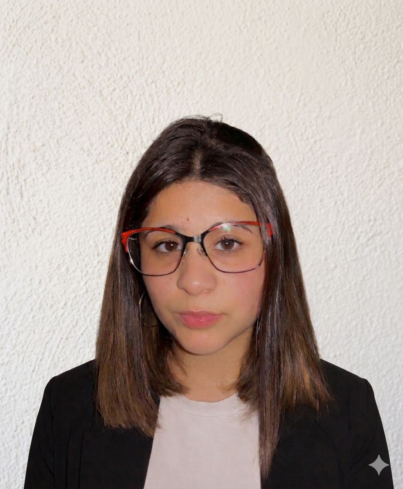

Hola, soy
Analítica y metódica. Busco desarrollarme en roles donde la tecnología sea el centro del trabajo.

Estudiante avanzada de la carrera de Programacion con orientacion en Data Science y desarrollo full stack. Soy analitica y metodica, con experiencia en atencion al cliente que me dio una perspectiva practica orientada al usuario. Puedo aportar conocimientos en desarrollo de software y analisis de datos aplicados a proyectos reales. Busco desarrollarme en roles donde la tecnologia sea el centro del trabajo.
Gestión de transacciones mediante sistemas POS, validación y control de datos, resolución de incidencias en tiempo real.
HTML5, CSS3, JS, Git, MongoDB, Node JS, ReactJS, POO
Power BI, dashboards, interpretación de datos
Formación en funciones básicas e intermedias, manejo de hojas de cálculo, fórmulas, organización de datos y creación de tablas, gráficos y reportes.